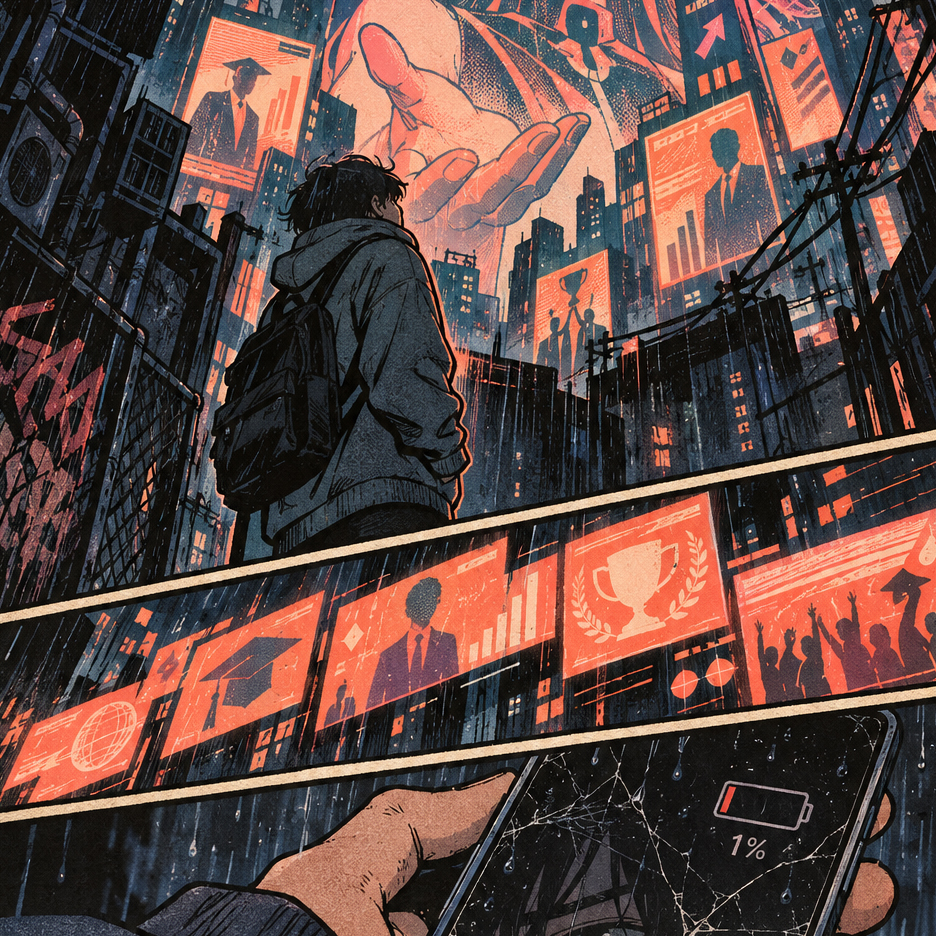
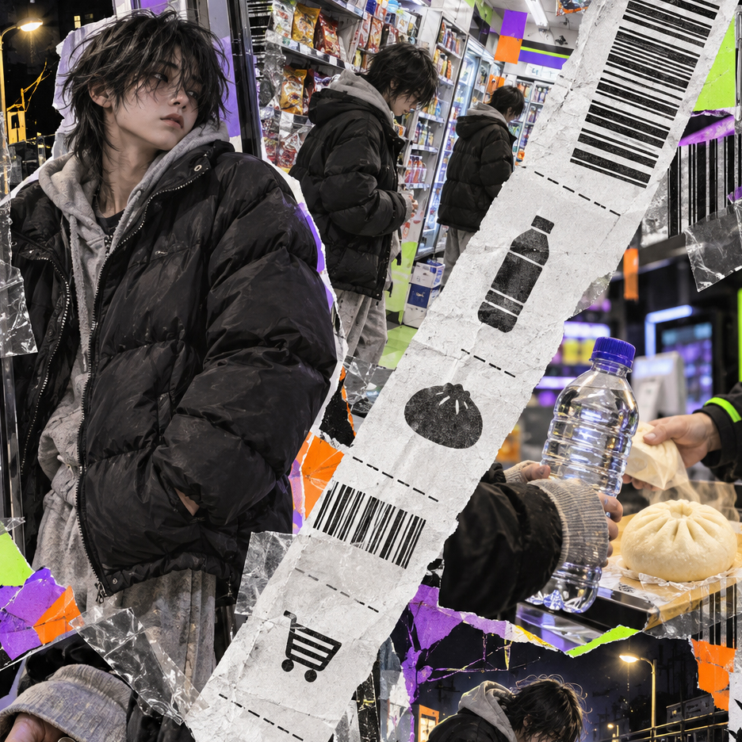
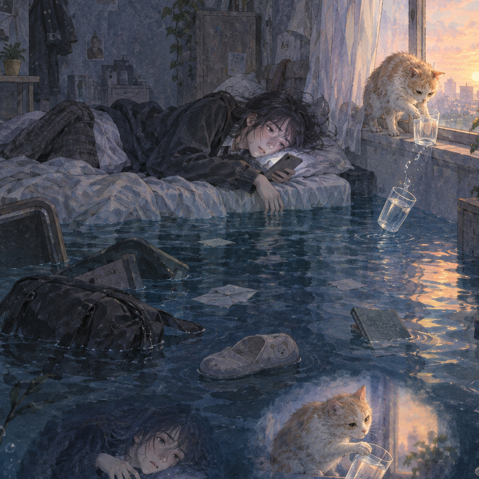
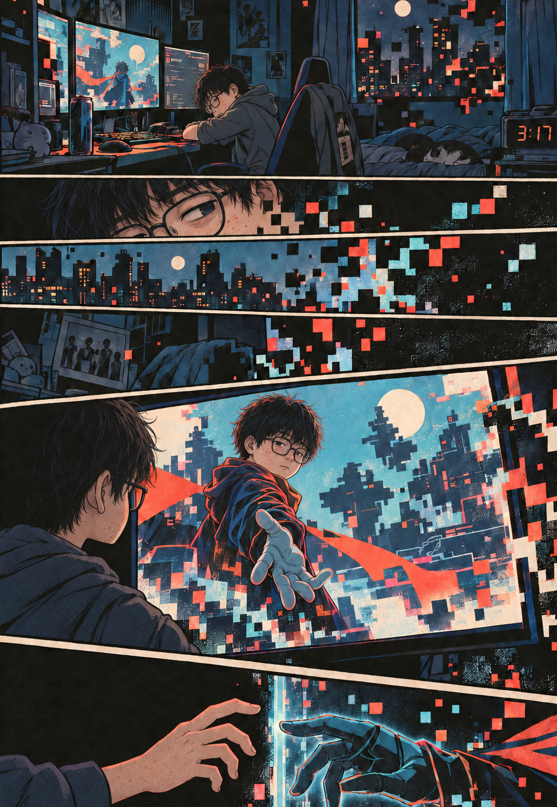
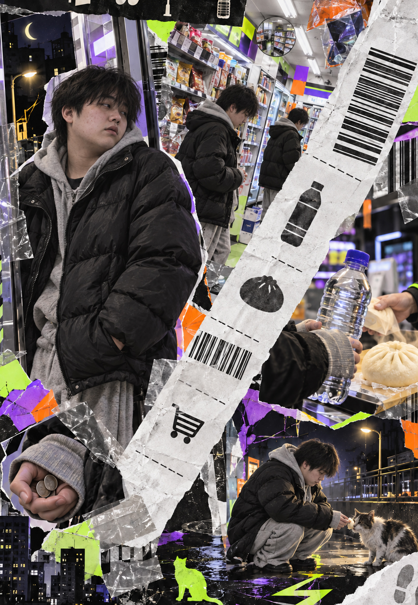
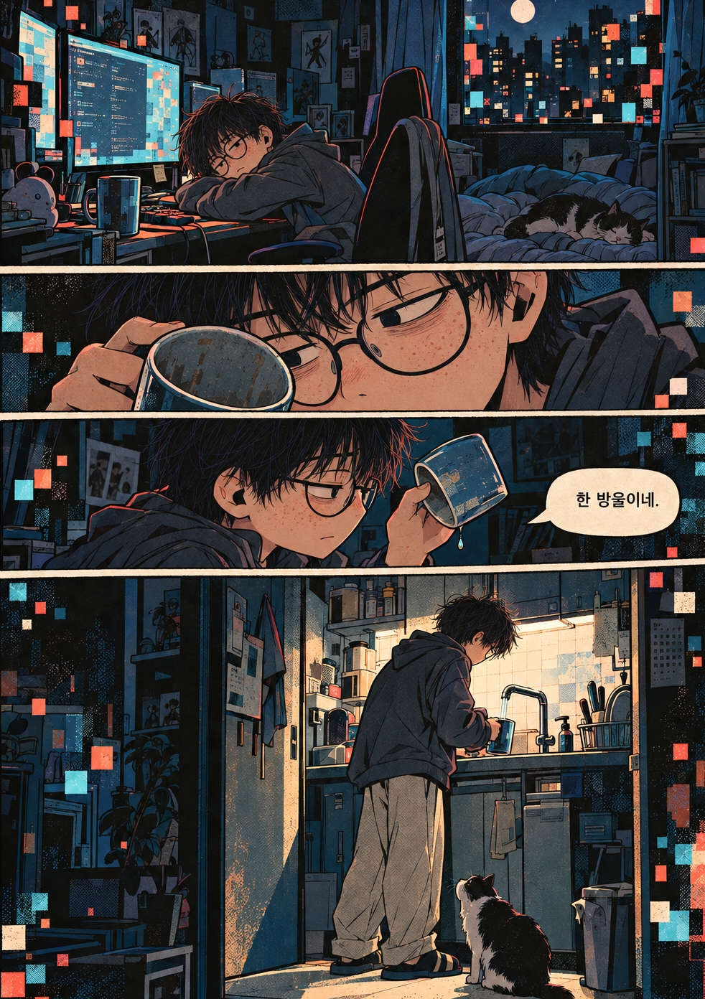
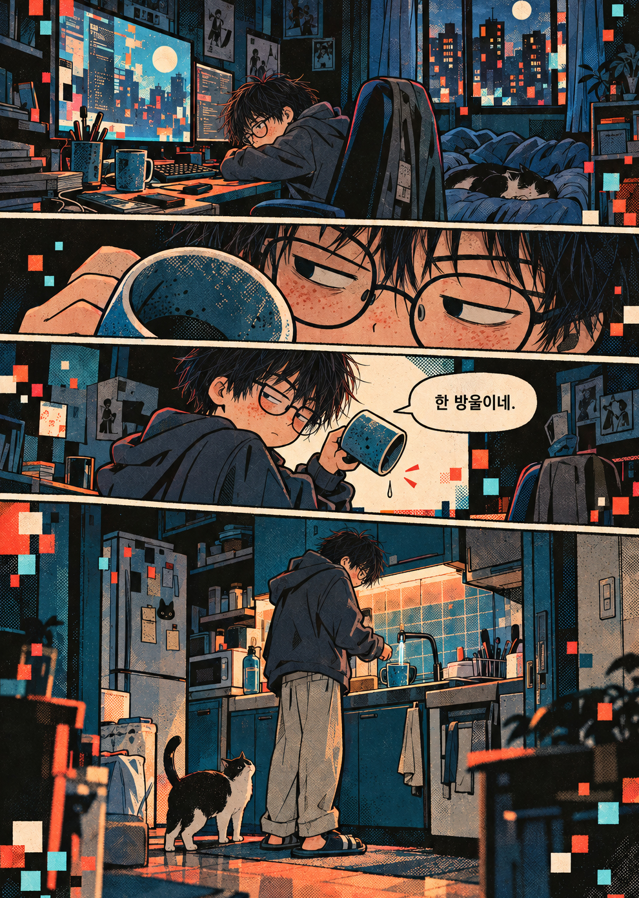

UI/UX DESIGNER AND CREATOR - YEOSANGHEE
MY WORK-WEBSTORY
어설프지만 온전히 내가 쓴 스토리(오직 이미지만 Chat이 생성)
삭막하고 치열한 경쟁속에서 인생의 목표와 꿈이 뭔지 끊임없이 질문받는 청소년과 청년들,
어른인 나조차도 막막할때가 많은데... AI까지 등장해서 더 불안해진 현실과 미래에 그저 다
놔버릴까싶은 아직은 단단하지 못한 친구들을 위해 뭔가를 만들어보고 싶었습니다.
꼭 읽어봐주세요ㅎ.



기획의도, 줄거리, 진행과정, 등과 내가 원하는 그림 이미지를 넣어서 3가지 안으로 받았는데 그 중
하나만 그럴 듯했고 하나는 수정해볼만한 정도, 다른 하나는 폐기해야했다. 2가지를 가지고 수정,
보완을 몇차례 거쳤다.
시티팝분위기(컬러는 주황과 남색계열을
주로 하고 필요하면 회색계열을 사용하게)
와 콜라주(실사와 이미지를 섞어서 좀 더
일상, 현실감이 느껴지게), 나머지 하나는
자유롭게 스타일 선택해서 3가지 안으로
달라고 요구.
첫안은 색감과 이미지는 좋았으나 스타일
이 흔한 일본 만화스러워서 마음에 걸렸고
콜라주는 마음에 들었는데 주인공이 비현
실적으로 잘생겼다. 3안은 너무 처지고 어
두워서 처분.


인물이 잘생기거나 보기좋으면
보는 이에 따라 비현실적이거나
거리감을 줄 수 있을 듯 해서 각
각 왜소하고 마른 체형에 안경낀
외모의 주인공과 퉁퉁한 체형의
얼굴에 여드름있고 게을러보이
는 인상의 주인공을 넣어서 결과
물을 만들어달라 요구했고 만화
스타일의 이미지는 왜소한 캐릭
터, 콜라주는 퉁퉁한 실사화 캐
릭터가 어울려서 두가지 안 중
선택을 해야했다.
만화스타일로 결정했고 내
가 원하는 스타일을 더 보완
해서 수정해야했다.
천천히 시리즈로 만들기로
계획했는데 시리즈 2에서는
이 콜라주스타일을 적용해
서 만들어보기로 했다.

마음에 드는 이미지에 가까
워졌는데 스토리에 최대한
유머러스트한 요소를 넣고
있기에 재미적인 스타일을
더 가미해야했다.

내 스토리에는 없는데 Chat이 고양이를 등장시
켰다. 고양이를 돌보는 주인공의 따스함과 책임감
에 의미를 부여할 수 있을 것 같아서 괜찮은 추가
요소가 될 듯 하다.
전체 스토리가 아직 완성되지 않았는데
다 완성되면 등장인물 인물별로 이미지
를 생성해서 캐릭터 레퍼런스 시트를 만
들어 첨부할 예정